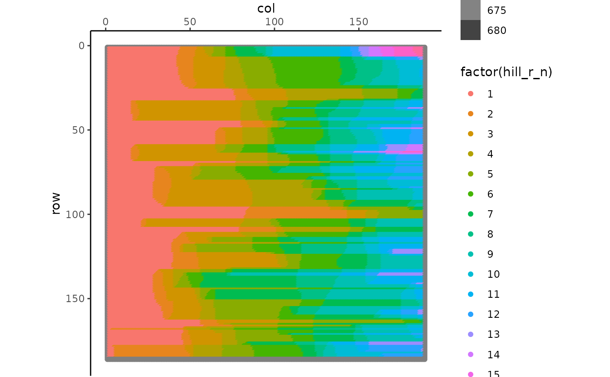

Computes row (east/west) and column (north/south) slope gradients and curvatures. Also calculates hill slopes as points when slope gradients switch directions
slope_gc(db, grid = 1)
| db | Dataframe dem |
|---|---|
| grid | Numeric. Grid size for the original dem |
Assume the following cells, and the calculations on elevation for focal point 5:
c7 c8 c9
c4 c5 c6
c1 c2 c3
Slope gradients and curvature
Row slope gradient towards east (sgre): (c4 - c6) / (2 * grid)
Positive slope is downslope (and east-facing)
Negative slope is upslope (and west-facing)
Row slope gradient (sgr): abs(sgre)
Column slope gradient towards north (sgcn): (c2 - c8) / (2 * grid)
Positive slope is downslope (and north-facing)
Negative slope is upslope (and south-facing)
Column slope gradient (sgc): abs(sgcn)
Row slope curvature (scr): (2 * c5 - c4 - c6) / (grid^2)
Column slope curvature (scc): (2 * c5 - c2 - c8) / (grid^2)
Where missing neighbours, assume same elevation as central point (i.e. assume an extension of the field).
Zero values replaced with arbitrarily small value, 0.00001
For gradients, zero values replaced with arbitrarily small value (0.00001) but with the sign of the previous point (i.e. to left (n4, west) if row; to bottom (n2, south) if column). If that previous point is missing, look to next point (i.e. n6 or n8). If cannot resolve by working through points, assign to positive.
Hill slopes
hill_r_n: Number of hillslopes in that row. It goes from 1 to whatever it ends. Hillslope no changes when it goes from downslope to upslope or from upslope to downslope (SGRE changes sign)
hill_r_dir: Direction the slope is facing, east facing as 1 and west facing as 4, all cells with the same hillslope no. have same hillslope direction
hill_r_cell: Order no of the cell in the hillslope, starts from 1 to how many cells there are in a given hillslope
hill_c_n: Same as for row, changes when SGCN changes sign
hill_c_dir: Same as for row, north facing as 1 and south facing as 3
hill_c_cell: Same as for row.
slope_gc,Calculate slope gradient and curvature, and hills,Calculate slope gradient and curvature, and hills — slope_gc,Source:R/flow_slope_gc.R,slope_gc.Rd,character(0),slope_gc,character(0),list(title = "Description", contents = "Computes row (east/west) and column (north/south) slope gradients and\ncurvatures. Also calculates hill slopes as points when slope gradients switch\ndirections
"),list(description = "Computes row (east/west) and column (north/south) slope gradients and\ncurvatures. Also calculates hill slopes as points when slope gradients switch\ndirections"),slope_gc(db, grid = 1),list(list(name = "db", description = "Dataframe dem
"), list(name = "grid", description = "Numeric. Grid size for the original dem
")),TRUE,d <- slope_gc(test_dem) library(ggplot2) flow_plot(d, type = "elevation") + geom_point(aes(colour = factor(hill_r_n))),list(list(title = "Details", contents = "Assume the following cells, and the calculations on elevation for focal point\n5:
\nc7 c8 c9
\nc4 c5 c6
\nc1 c2 c3
\nSlope gradients and curvature
Row slope gradient towards east (sgre): (c4 - c6) / (2 * grid)
Positive slope is downslope (and east-facing)
Negative slope is upslope (and west-facing)
Row slope gradient (sgr): abs(sgre)
Column slope gradient towards north (sgcn): (c2 - c8) / (2 * grid)
Positive slope is downslope (and north-facing)
Negative slope is upslope (and south-facing)
Column slope gradient (sgc): abs(sgcn)
Row slope curvature (scr): (2 * c5 - c4 - c6) / (grid^2)
Column slope curvature (scc): (2 * c5 - c2 - c8) / (grid^2)
Where missing neighbours, assume same elevation as central point (i.e.\nassume an extension of the field).
\nZero values replaced with arbitrarily small value, 0.00001
\nFor gradients, zero values replaced with arbitrarily small value (0.00001)\nbut with the sign of the previous point (i.e. to left (n4, west) if row; to\nbottom (n2, south) if column). If that previous point is missing, look to\nnext point (i.e. n6 or n8). If cannot resolve by working through points,\nassign to positive.
\nHill slopes
hill_r_n: Number of hillslopes in that row. It goes from 1 to whatever it\nends. Hillslope no changes when it goes from downslope to upslope or from\nupslope to downslope (SGRE changes sign)
hill_r_dir: Direction the slope is facing, east facing as 1 and west\nfacing as 4, all cells with the same hillslope no. have same hillslope\ndirection
hill_r_cell: Order no of the cell in the hillslope, starts from 1 to how\nmany cells there are in a given hillslope
hill_c_n: Same as for row, changes when SGCN changes sign
hill_c_dir: Same as for row, north facing as 1 and south facing as 3
hill_c_cell: Same as for row.